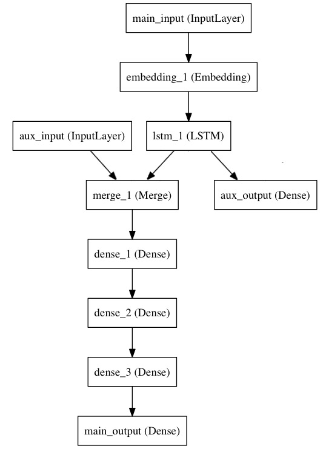

快速开始泛型模型
Keras泛型模型接口是用户定义多输出模型、非循环有向模型或具有共享层的模型等复杂模型的途径
这部分的文档假设你已经对Sequential模型已经比较熟悉
让我们从简单一点的模型开始
第一个模型：全连接网络
Sequential当然是实现全连接网络的最好方式，但我们从简单的全连接网络开始，有助于我们学习这部分的内容。在开始前，有几个概念需要澄清：
-
层对象接受张量为参数，返回一个张量。张量在数学上只是数据结构的扩充，一阶张量就是向量，二阶张量就是矩阵，三阶张量就是立方体。在这里张量只是广义的表达一种数据结构，例如一张彩色图像其实就是一个三阶张量，它由三个通道的像素值堆叠而成。而10000张彩色图构成的一个数据集合则是四阶张量。
-
输入是张量，输出也是张量的一个框架就是一个模型
-
这样的模型可以被像Keras的
Sequential一样被训练
from keras.layers import Input, Dense
from keras.models import Model
# this returns a tensor
inputs = Input(shape=(784,))
# a layer instance is callable on a tensor, and returns a tensor
x = Dense(64, activation='relu')(inputs)
x = Dense(64, activation='relu')(x)
predictions = Dense(10, activation='softmax')(x)
# this creates a model that includes
# the Input layer and three Dense layers
model = Model(input=inputs, output=predictions)
model.compile(optimizer='rmsprop',
loss='categorical_crossentropy',
metrics=['accuracy'])
model.fit(data, labels) # starts training
所有的模型都是可调用的，就像层一样
利用泛型模型的接口，我们可以很容易的重用已经训练好的模型：你可以把模型当作一个层一样，通过提供一个tensor来调用它。注意当你调用一个模型时，你不仅仅重用了它的结构，也重用了它的权重。
x = Input(shape=(784,))
# this works, and returns the 10-way softmax we defined above.
y = model(x)
这种方式可以允许你快速的创建能处理序列信号的模型，你可以很快将一个图像分类的模型变为一个对视频分类的模型，只需要一行代码：
from keras.layers import TimeDistributed
# input tensor for sequences of 20 timesteps,
# each containing a 784-dimensional vector
input_sequences = Input(shape=(20, 784))
# this applies our previous model to every timestep in the input sequences.
# the output of the previous model was a 10-way softmax,
# so the output of the layer below will be a sequence of 20 vectors of size 10.
processed_sequences = TimeDistributed(model)(input_sequences)
多输入和多输出模型
使用泛型模型的一个典型场景是搭建多输入、多输出的模型。
考虑这样一个模型。我们希望预测Twitter上一条新闻会被转发和点赞多少次。模型的主要输入是新闻本身，也就是一个词语的序列。但我们还可以拥有额外的输入，如新闻发布的日期等。这个模型的损失函数将由两部分组成，辅助的损失函数评估仅仅基于新闻本身做出预测的情况，主损失函数评估基于新闻和额外信息的预测的情况，即使来自主损失函数的梯度发生弥散，来自辅助损失函数的信息也能够训练Embeddding和LSTM层。在模型中早点使用主要的损失函数是对于深度网络的一个良好的正则方法。总而言之，该模型框图如下：

让我们用泛型模型来实现这个框图
主要的输入接收新闻本身，即一个整数的序列（每个整数编码了一个词）。这些整数位于1到10，000之间（即我们的字典有10，000个词）。这个序列有100个单词。
from keras.layers import Input, Embedding, LSTM, Dense, merge
from keras.models import Model
# headline input: meant to receive sequences of 100 integers, between 1 and 10000.
# note that we can name any layer by passing it a "name" argument.
main_input = Input(shape=(100,), dtype='int32', name='main_input')
# this embedding layer will encode the input sequence
# into a sequence of dense 512-dimensional vectors.
x = Embedding(output_dim=512, input_dim=10000, input_length=100)(main_input)
# a LSTM will transform the vector sequence into a single vector,
# containing information about the entire sequence
lstm_out = LSTM(32)(x)
然后，我们插入一个额外的损失，使得即使在主损失很高的情况下，LSTM和Embedding层也可以平滑的训练。
auxiliary_output = Dense(1, activation='sigmoid', name='aux_output')(lstm_out)
再然后，我们将LSTM与额外的输入数据串联起来组成输入，送入模型中：
auxiliary_input = Input(shape=(5,), name='aux_input')
x = merge([lstm_out, auxiliary_input], mode='concat')
# we stack a deep fully-connected network on top
x = Dense(64, activation='relu')(x)
x = Dense(64, activation='relu')(x)
x = Dense(64, activation='relu')(x)
# and finally we add the main logistic regression layer
main_output = Dense(1, activation='sigmoid', name='main_output')(x)
最后，我们定义整个2输入，2输出的模型：
model = Model(input=[main_input, auxiliary_input], output=[main_output, auxiliary_output])
模型定义完毕，下一步编译模型。我们给额外的损失赋0.2的权重。我们可以通过关键字参数loss_weights或loss来为不同的输出设置不同的损失函数或权值。这两个参数均可为Python的列表或字典。这里我们给loss传递单个损失函数，这个损失函数会被应用于所有输出上。
model.compile(optimizer='rmsprop', loss='binary_crossentropy',
loss_weights=[1., 0.2])
编译完成后，我们通过传递训练数据和目标值训练该模型：
model.fit([headline_data, additional_data], [labels, labels],
nb_epoch=50, batch_size=32)
因为我们输入和输出是被命名过的（在定义时传递了“name”参数），我们也可以用下面的方式编译和训练模型：
model.compile(optimizer='rmsprop',
loss={'main_output': 'binary_crossentropy', 'aux_output': 'binary_crossentropy'},
loss_weights={'main_output': 1., 'aux_output': 0.2})
# and trained it via:
model.fit({'main_input': headline_data, 'aux_input': additional_data},
{'main_output': labels, 'aux_output': labels},
nb_epoch=50, batch_size=32)
共享层
另一个使用泛型模型的场合是使用共享层的时候。
考虑微博数据，我们希望建立模型来判别两条微博是否是来自同一个用户，这个需求同样可以用来判断一个用户的两条微博的相似性。
一种实现方式是，我们建立一个模型，它分别将两条微博的数据映射到两个特征向量上，然后将特征向量串联并加一个logistic回归层，输出它们来自同一个用户的概率。这种模型的训练数据是一对对的微博。
因为这个问题是对称的，所以处理第一条微博的模型当然也能重用于处理第二条微博。所以这里我们使用一个共享的LSTM层来进行映射。
首先，我们将微博的数据转为（140，256）的矩阵，即每条微博有140个字符，每个单词的特征由一个256维的词向量表示，向量的每个元素为1表示某个字符出现，为0表示不出现，这是一个one-hot编码。
【Tips】之所以是（140，256）是因为一条微博最多有140个字符（据说现在要取消这个限制了），而扩展的ASCII码表编码了常见的256个字符。原文中此处为Tweet，所以对外国人而言这是合理的。如果考虑中文字符，那一个单词的词向量就不止256了。【@Bigmoyan】
from keras.layers import Input, LSTM, Dense, merge
from keras.models import Model
tweet_a = Input(shape=(140, 256))
tweet_b = Input(shape=(140, 256))
若要对不同的输入共享同一层，就初始化该层一次，然后多次调用它
# this layer can take as input a matrix
# and will return a vector of size 64
shared_lstm = LSTM(64)
# when we reuse the same layer instance
# multiple times, the weights of the layer
# are also being reused
# (it is effectively *the same* layer)
encoded_a = shared_lstm(tweet_a)
encoded_b = shared_lstm(tweet_b)
# we can then concatenate the two vectors:
merged_vector = merge([encoded_a, encoded_b], mode='concat', concat_axis=-1)
# and add a logistic regression on top
predictions = Dense(1, activation='sigmoid')(merged_vector)
# we define a trainable model linking the
# tweet inputs to the predictions
model = Model(input=[tweet_a, tweet_b], output=predictions)
model.compile(optimizer='rmsprop',
loss='binary_crossentropy',
metrics=['accuracy'])
model.fit([data_a, data_b], labels, nb_epoch=10)
先暂停一下，看看共享层到底输出了什么，它的输出数据shape又是什么
层“节点”的概念
无论何时，当你在某个输入上调用层时，你就创建了一个新的张量（即该层的输出），同时你也在为这个层增加一个“（计算）节点”。这个节点将输入张量映射为输出张量。当你多次调用该层时，这个层就有了多个节点，其下标分别为0，1，2...
在上一版本的Keras中，你可以通过layer.get_output()方法来获得层的输出张量，或者通过layer.output_shape获得其输出张量的shape。这个版本的Keras你仍然可以这么做（除了layer.get_output()被output()替换）。但如果一个层与多个输入相连，会出现什么情况呢？
如果层只与一个输入相连，那没有任何困惑的地方。.output()将会返回该层唯一的输出
a = Input(shape=(140, 256))
lstm = LSTM(32)
encoded_a = lstm(a)
assert lstm.output == encoded_a
但当层与多个输入相连时，会出现问题
a = Input(shape=(140, 256))
b = Input(shape=(140, 256))
lstm = LSTM(32)
encoded_a = lstm(a)
encoded_b = lstm(b)
lstm.output
上面这段代码会报错
>> AssertionError: Layer lstm_1 has multiple inbound nodes,
hence the notion of "layer output" is ill-defined.
Use `get_output_at(node_index)` instead.
通过下面这种调用方式即可解决
assert lstm.get_output_at(0) == encoded_a
assert lstm.get_output_at(1) == encoded_b
够简单吧？
对于input_shape和output_shape也是一样，如果一个层只有一个节点，或所有的节点都有相同的输入或输出shape，那么input_shape和output_shape都是没有歧义的，并也只返回一个值。但是，例如你把一个相同的Convolution2D应用于一个大小为(3,32,32)的数据，然后又将其应用于一个(3,64,64)的数据，那么此时该层就具有了多个输入和输出的shape，你就需要显式的指定节点的下标，来表明你想取的是哪个了
a = Input(shape=(3, 32, 32))
b = Input(shape=(3, 64, 64))
conv = Convolution2D(16, 3, 3, border_mode='same')
conved_a = conv(a)
# only one input so far, the following will work:
assert conv.input_shape == (None, 3, 32, 32)
conved_b = conv(b)
# now the `.input_shape` property wouldn't work, but this does:
assert conv.get_input_shape_at(0) == (None, 3, 32, 32)
assert conv.get_input_shape_at(1) == (None, 3, 64, 64)
更多的例子
代码示例依然是学习的最佳方式，这里是更多的例子
inception模型
inception的详细结构参见Google的这篇论文：Going Deeper with Convolutions
from keras.layers import merge, Convolution2D, MaxPooling2D, Input
input_img = Input(shape=(3, 256, 256))
tower_1 = Convolution2D(64, 1, 1, border_mode='same', activation='relu')(input_img)
tower_1 = Convolution2D(64, 3, 3, border_mode='same', activation='relu')(tower_1)
tower_2 = Convolution2D(64, 1, 1, border_mode='same', activation='relu')(input_img)
tower_2 = Convolution2D(64, 5, 5, border_mode='same', activation='relu')(tower_2)
tower_3 = MaxPooling2D((3, 3), strides=(1, 1), border_mode='same')(input_img)
tower_3 = Convolution2D(64, 1, 1, border_mode='same', activation='relu')(tower_3)
output = merge([tower_1, tower_2, tower_3], mode='concat', concat_axis=1)
卷积层的残差连接
残差网络（Residual Network）的详细信息请参考这篇文章：Deep Residual Learning for Image Recognition
from keras.layers import merge, Convolution2D, Input
# input tensor for a 3-channel 256x256 image
x = Input(shape=(3, 256, 256))
# 3x3 conv with 3 output channels(same as input channels)
y = Convolution2D(3, 3, 3, border_mode='same')(x)
# this returns x + y.
z = merge([x, y], mode='sum')
共享视觉模型
该模型在两个输入上重用了图像处理的模型，用来判别两个MNIST数字是否是相同的数字
from keras.layers import merge, Convolution2D, MaxPooling2D, Input, Dense, Flatten
from keras.models import Model
# first, define the vision modules
digit_input = Input(shape=(1, 27, 27))
x = Convolution2D(64, 3, 3)(digit_input)
x = Convolution2D(64, 3, 3)(x)
x = MaxPooling2D((2, 2))(x)
out = Flatten()(x)
vision_model = Model(digit_input, out)
# then define the tell-digits-apart model
digit_a = Input(shape=(1, 27, 27))
digit_b = Input(shape=(1, 27, 27))
# the vision model will be shared, weights and all
out_a = vision_model(digit_a)
out_b = vision_model(digit_b)
concatenated = merge([out_a, out_b], mode='concat')
out = Dense(1, activation='sigmoid')(concatenated)
classification_model = Model([digit_a, digit_b], out)
视觉问答模型
在针对一幅图片使用自然语言进行提问时，该模型能够提供关于该图片的一个单词的答案
这个模型将自然语言的问题和图片分别映射为特征向量，将二者合并后训练一个logistic回归层，从一系列可能的回答中挑选一个。
from keras.layers import Convolution2D, MaxPooling2D, Flatten
from keras.layers import Input, LSTM, Embedding, Dense, merge
from keras.models import Model, Sequential
# first, let's define a vision model using a Sequential model.
# this model will encode an image into a vector.
vision_model = Sequential()
vision_model.add(Convolution2D(64, 3, 3, activation='relu', border_mode='same', input_shape=(3, 224, 224)))
vision_model.add(Convolution2D(64, 3, 3, activation='relu'))
vision_model.add(MaxPooling2D((2, 2)))
vision_model.add(Convolution2D(128, 3, 3, activation='relu', border_mode='same'))
vision_model.add(Convolution2D(128, 3, 3, activation='relu'))
vision_model.add(MaxPooling2D((2, 2)))
vision_model.add(Convolution2D(256, 3, 3, activation='relu', border_mode='same'))
vision_model.add(Convolution2D(256, 3, 3, activation='relu'))
vision_model.add(Convolution2D(256, 3, 3, activation='relu'))
vision_model.add(MaxPooling2D((2, 2)))
vision_model.add(Flatten())
# now let's get a tensor with the output of our vision model:
image_input = Input(shape=(3, 224, 224))
encoded_image = vision_model(image_input)
# next, let's define a language model to encode the question into a vector.
# each question will be at most 100 word long,
# and we will index words as integers from 1 to 9999.
question_input = Input(shape=(100,), dtype='int32')
embedded_question = Embedding(input_dim=10000, output_dim=256, input_length=100)(question_input)
encoded_question = LSTM(256)(embedded_question)
# let's concatenate the question vector and the image vector:
merged = merge([encoded_question, encoded_image], mode='concat')
# and let's train a logistic regression over 1000 words on top:
output = Dense(1000, activation='softmax')(merged)
# this is our final model:
vqa_model = Model(input=[image_input, question_input], output=output)
# the next stage would be training this model on actual data.
视频问答模型
在做完图片问答模型后，我们可以快速将其转为视频问答的模型。在适当的训练下，你可以为模型提供一个短视频（如100帧）然后向模型提问一个关于该视频的问题，如“what sport is the boy playing？”->“football”
from keras.layers import TimeDistributed
video_input = Input(shape=(100, 3, 224, 224))
# this is our video encoded via the previously trained vision_model (weights are reused)
encoded_frame_sequence = TimeDistributed(vision_model)(video_input) # the output will be a sequence of vectors
encoded_video = LSTM(256)(encoded_frame_sequence) # the output will be a vector
# this is a model-level representation of the question encoder, reusing the same weights as before:
question_encoder = Model(input=question_input, output=encoded_question)
# let's use it to encode the question:
video_question_input = Input(shape=(100,), dtype='int32')
encoded_video_question = question_encoder(video_question_input)
# and this is our video question answering model:
merged = merge([encoded_video, encoded_video_question], mode='concat')
output = Dense(1000, activation='softmax')(merged)
video_qa_model = Model(input=[video_input, video_question_input], output=output)